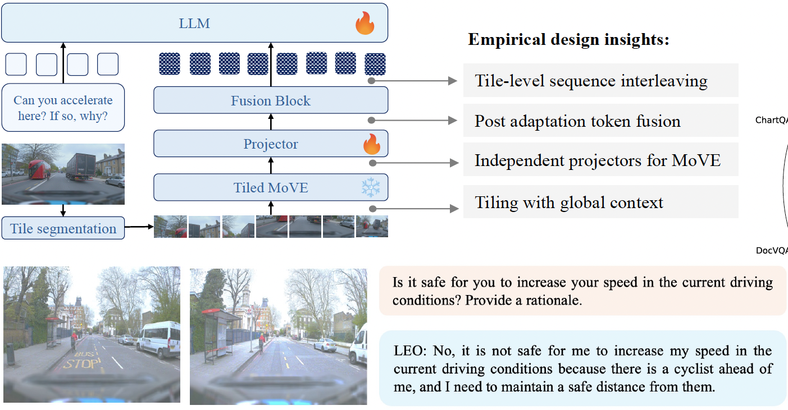
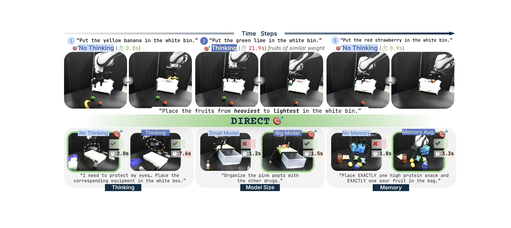
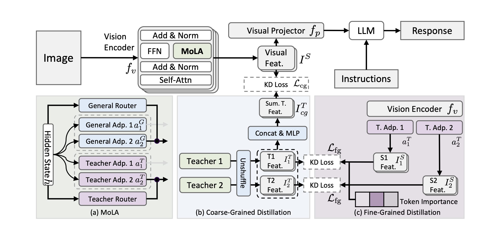
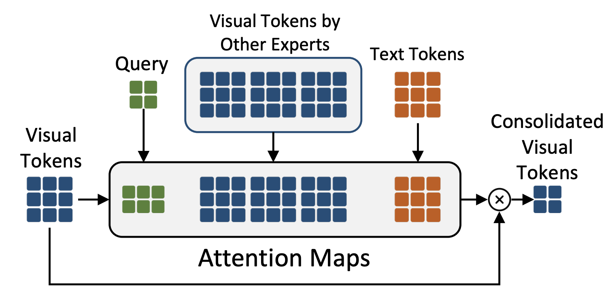
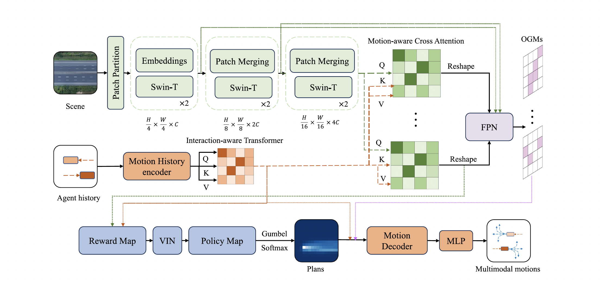
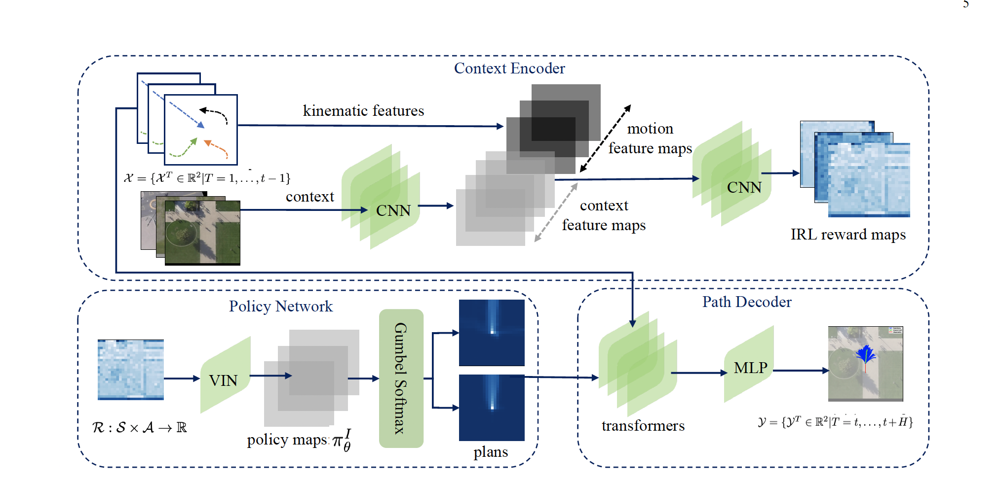
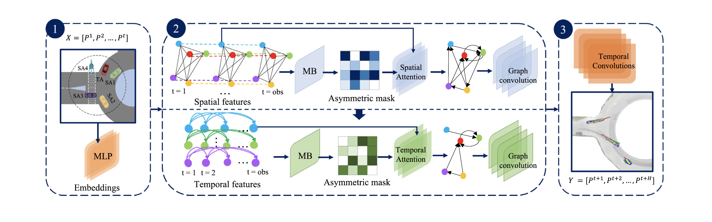

About Me
Hello and welcome! I am currently a Visiting Postdoctoral Scholar at Stanford working with Prof. Marco Pavone at Autonomous Systems Lab (ASL). I am also a Postdoctoral fellow at the University of Waterloo working with Prof. Krzysztof Czarnecki at the Waterloo Intelligent Systems Engineering Lab (WISE). I obtained my Ph.D. degree in Computer Science from University of Ottawa, working under the guidance of Prof. Azzedine Boukerche at the PARADISE Laboratory. My research spans multimodal learning, large language models, and autonomous systems, with a focus on trustworthy and efficient multimodal reasoning.
News
- 07/2026: Organizing Grounded and Faithful Vision-Language Models for Real-World Deployment Workshop at NeurIPS 2026!
- 06/2026: Our paper is accepted at RSS FM4RoboPlan workshop (Oral)!
- 05/2026: I’m co-organizing Grounding Language Models: Learning Faithfully and Efficiently Workshop at EMNLP 2026!
- 04/2026: I’m co-organizing How to Build Effective World Models for Embodied AI Workshop at ECCV 2026!
- 03/2026: I’m serving as an Area Chair at NeurIPS 2026!
- 02/2026: I have joined Stanford’s Autonomous Systems Lab (ASL) as a Visiting Postdoctoral Scholar.
- 02/2026: Our paper is accepted at TMLR (J2C Certification)!
- 12/2025: Delivered a keynote talk at Embodied and Safe-Assured Robotic Systems (E-SARS) Workshop at NeurIPS 2025!
- 11/2025: Organized Vision Language Models: Challenges of RealWorld Deployment (VLM4RWD) Workshop at NeurIPS 2025
- 09/2025: Our paper is accepted at NeurIPS 2025!
- 08/2025: Our paper is accepted at EMNLP 2025!
- 08/2024: Our paper is accepted at IEEE transaction on Vehicular Technology!
- 04/2024: I have joined the WISE lab team at the University of Waterloo as a Postdoc!
- 02/2024: I was awarded the prestigious NSERC Postdoctoral Fellowship!
- 01/2024: One paper is accepted at IEEE ICC 2024!
- 11/2023: I successfully defended my Ph.D. thesis and was nominated for the Best Thesis Award!
- 09/2023: Our paper is accepted at IEEE transaction on Vehicular Technology!
- 08/2023: One paper is accepted at IEEE Globecom 2023!
- 02/2023: Invited talk for Principle of Intelligent Transportation Systems at University of ottawa!
Research
The rapid emergence of multimodal foundation models is fundamentally changing how intelligent systems perceive, reason, and interact with the world. Models that jointly understand vision, language, and action are becoming the core intelligence behind autonomous vehicles, robots, embodied agents, and scientific assistants. As these systems transition from research laboratories to real-world deployment, the central challenge is no longer simply improving benchmark performance—it is ensuring that they reason from visual evidence, understand uncertainty, interact naturally with humans, and make reliable decisions in complex and dynamic environments. Recent advances in large-scale multimodal learning have demonstrated remarkable capabilities in perception, reasoning, and instruction following. However, today's models remain limited by hallucinations, weak grounding, poor interpretability, and an inability to reliably connect perception with downstream decision-making. Addressing these limitations requires new algorithmic and representational foundations that integrate perception, reasoning, memory, and action while maintaining robustness and transparency. The ultimate goal of my research is to develop trustworthy, interactive, and scalable multimodal AI systems that integrate vision, language, and action to enable grounded reasoning, predictive world modeling, and reliable decision-making in real-world environments. To this end, I develop methods spanning multimodal foundation models, computer vision, machine learning, robotics, reinforcement learning, and explainable AI to build autonomous systems that can perceive, understand, reason, and act reliably. My earlier work focused on driving behavior analysis and intelligent transportation systems, where I developed deep learning and inverse reinforcement learning approaches for multimodal motion forecasting, scalable driver representation learning, and graph-based models for multi-agent interaction. These efforts established the foundations for my current research on grounded multimodal reasoning, trustworthy AI, world models, and embodied intelligence. For the full list of my publications, visit my Google scholar page.
Selected Publication
VISTAQA: Benchmarking Joint Visual Question Answering and Pixel-Level Evidence
M.N. Azadani, Yimu Wang, Yongpeng Zhu, Lihong Chen, Milan Ganai, Sean Sedwards, Marco Pavone, Krzysztof CzarneckiWe present VISTAQA, the first benchmark to jointly evaluate whether multimodal foundation models not only produce the correct answer but also identify the visual evidence supporting their reasoning. Spanning six domains and diverse reasoning tasks, it reveals a substantial gap between answer accuracy and visual grounding, highlighting the need for more faithful and trustworthy multimodal AI.

Rethinking the Mixture of Vision Encoders Paradigm for Enhanced Visual Understanding in Multimodal LLMs
M.N. Azadani, James Riddell, Sean Sedwards, Krzysztof CzarneckiLEO introduces a novel MLLM that combines complementary vision encoders through an efficient dual-branch MoVE architecture. By integrating adaptive tiling with a post-adaptation fusion strategy, LEO significantly improves visual understanding across a wide range of vision-language benchmarks while remaining effective for specialized applications such as autonomous driving, demonstrating the benefits of leveraging diverse visual representations within a unified framework.

DIRECT: When and Where Should You Allocate Test-Time Compute in Embodied Planners?
Jadelynn Dao*, Milan Ganai*, Yasmina Abukhadra, Ajay Sridhar, M.N. Azadani, Katie Luo, Clark Barrett, Jiajun Wu, Chelsea Finn, Marco PavoneNaively scaling test-time compute is not always the answer!! More reasoning, larger models, and longer memory each may help in different situations, but often at a significant cost. DIRECT takes a step in that direction by dynamically selecting the cheapest planner that can still solve a given task, achieving strong performance while allocating compute only where it provides value.

HAWAII: Hierarchical Visual Knowledge Transfer for Efficient Vision-Language Models
Yimu Wang, M.N. Azadani, Sean Sedwards, Krzysztof CzarneckiHAWAII introduces an efficient framework for enhancing MLLMs by distilling knowledge from multiple visual experts into a single vision encoder. Through hierarchical visual knowledge transfer and adaptive teacher-specific routing, it significantly improves visual understanding while maintaining the efficiency required for real-world deployment.

LEO-MINI: An Efficient Multimodal Large Language Model using Conditional Token Reduction and Mixture of Multi-Modal Experts
Yimu Wang*, M.N. Azadani*, Sean Sedwards, Krzysztof CzarneckiLEO-MINI presents an efficient MLLM that reduces the computational cost of visual reasoning without sacrificing performance. By combining conditional visual token reduction with a mixture of multimodal experts, it significantly improves efficiency while achieving state-of-the-art results across diverse vision-language benchmarks, enabling scalable multimodal understanding for real-world applications.

Hierarchical Transformers for Motion Forecasting based on Inverse Reinforcement Learning
M.N. Azadani and A. BoukercheHTMF combines hierarchical transformers and inverse reinforcement learning to forecast realistic, multimodal trajectories for autonomous driving. By learning from expert human behavior and incorporating scene context through occupancy maps, it generates human-like, scene-compliant motion predictions that outperform existing approaches across diverse traffic scenarios.

CAPHA: Context-Aware Path Prediction of Heterogeneous Agents
M.N. Azadani and A. BoukercheCAPHA presents a context-aware trajectory forecasting framework that leverages inverse reinforcement learning to predict realistic, multimodal future paths for vehicles, pedestrians, and cyclists. By integrating scene understanding with transformer-based motion prediction, it generates diverse and scene-compliant trajectories, achieving state-of-the-art performance on challenging autonomous driving benchmarks.

STAG: A novel interaction-aware path prediction method based on Spatio-Temporal Attention Graphs
M.N. Azadani and A. BoukercheSTAG introduces a spatio-temporal graph framework for vehicle trajectory prediction that explicitly models asymmetric interactions among traffic participants. By combining graph neural networks, attention mechanisms, and directed interaction graphs, it captures complex multi-agent behaviors and achieves state-of-the-art prediction accuracy across highways, intersections, and roundabouts.
Academic Services
Area Chair
- NeurIPS 2026
Workshop Organizing Committee Member
Journal Reviewer
- I am an active reviewer for leading journals, including TMLR, T-VT, T-ITS, T-IV, Pattern Recognition, Nature Communications, and others.
Confernece Reviewer
- I am an active reviewer for leading ML and CV conferences, including CVPR, ICCV, WACV, NeurIPS, ACL, and others.